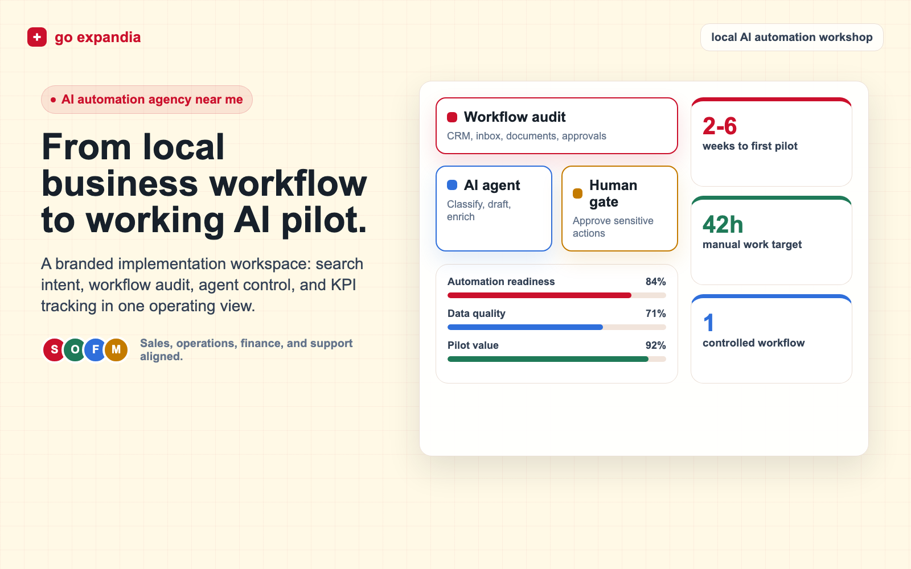

AI Automation Agency Near Me: How to Choose the Right Local AI Partner
If you are searching for an AI automation agency near me, you probably do not want another generic AI demo. You want a partner that understands your business, your timezone, your systems, and the workflows that slow your team down every week.

Best-fit projects
Workflow automation, AI agents, internal copilots, CRM operations, reporting, document processing, customer support, and custom AI systems.
Primary keyword
AI automation agency near me
Project start
Days to weeks
First pilot
2 to 6 weeks
Best outcome
Measured time saved
TL;DR
The best AI automation agency near you is not always the one with the closest office. It is the partner that can map your workflow, connect to your tools, build safe automation, train your team, and measure results after launch. Choose an agency that starts with process discovery, uses your real data, creates a pilot before a large rollout, and can support AI agents, integrations, governance, and ongoing optimization.
The phrase AI automation agency near me has become popular because business owners are done with abstract AI promises. They are looking for someone close enough to understand their market, respond quickly, and take responsibility for real operational results. That local intent matters. A company in Zurich, Istanbul, Berlin, London, Amsterdam, or New York may use the same tools, but the workflows, compliance expectations, customer habits, and internal systems can be very different.
At the same time, "near me" does not have to mean the agency must sit five streets away. For AI automation, the better definition of local is practical access: shared working hours, clear communication, fast workshops, strong documentation, and the ability to understand your commercial environment. A modern AI agency can work remotely and still operate like a local partner when the discovery, implementation, and support model are structured correctly.
Start with one workflow
Want to know what AI should automate first?
We can review your current process, identify the highest-value use case, and show you what a practical first pilot would look like.
What an AI Automation Agency Near Me Should Actually Do
A serious AI automation agency does more than connect a chatbot to a website. The job is to find repeatable work, define the decision rules, connect the right systems, add AI where it improves speed or quality, and keep people in control where judgment is still required. That may include automating lead qualification, proposal drafting, ticket routing, invoice checks, internal reporting, customer replies, research tasks, production planning, or data cleanup.
The agency should also separate three different types of work. First, there is workflow automation: moving data, triggering actions, sending updates, and removing repetitive admin. Second, there is AI agent development: building task-focused systems that can reason over data, use tools, and complete defined actions under guardrails. Third, there are custom AI solutions: dashboards, internal apps, retrieval systems, data pipelines, and interfaces that are built around your company rather than a generic template.
18 second marketing explainer
A short answer to what an AI automation agency does, how a first pilot starts, and when to book a call.
Why Local Fit Still Matters for AI Automation
Local fit matters because automation is never just a technical task. Your agency needs to understand how your sales team follows up, how managers approve work, how support tickets are handled, how finance checks documents, and how customers expect to communicate. If the agency cannot understand that context, it will build a clever tool that nobody uses.
For European businesses, local fit often includes GDPR awareness, data residency questions, multilingual communication, and practical timezone overlap. For US businesses, it may include regional sales coverage, industry-specific compliance, CRM hygiene, and fast response workflows. For growing international companies, the challenge is usually cross-market consistency: one system needs to work across teams without forcing every country to abandon local habits that actually matter.

How to Choose the Best AI Automation Agency Near You
The easiest way to choose is to ignore the AI buzzwords and ask for the operating model. A strong agency can explain how it discovers use cases, scores automation opportunities, handles data access, chooses tools, builds prototypes, trains users, and measures value after launch. It should be able to say no to weak use cases. It should also be comfortable working with messy spreadsheets, old CRMs, shared inboxes, PDFs, manual approvals, and all the normal realities of business operations.
A weak agency usually starts with the technology first. It talks about models, prompts, agents, or platforms before it understands the process. That is dangerous because most automation failures come from unclear ownership, bad data, missing exception handling, or a workflow that was never properly mapped. AI is useful only when the surrounding process is clear enough for automation to behave reliably.
Selection Scorecard for a Local AI Automation Partner
Must-have capabilities
- Workflow discovery before tool selection.
- Ability to build integrations, not only prompts.
- Clear data privacy and access control process.
- AI agent development with human review paths.
- Post-launch support, measurement, and iteration.
Warning signs
- They promise full automation before seeing your workflow.
- They cannot explain failure handling.
- They only recommend one platform for every problem.
- They do not define success metrics before the build.
- They avoid documentation and training.
What Should You Automate First?
The best first AI automation project is usually not the most exciting one. It is the process with high volume, clear rules, visible cost, and enough data to evaluate performance. Good starting points include inbound lead qualification, quote follow-up, customer support triage, invoice review, reporting preparation, job candidate screening, order status updates, meeting notes, knowledge base search, and CRM cleanup.
A strong pilot should be narrow enough to launch quickly but valuable enough to matter. For example, instead of "automate sales," a better pilot is "classify inbound leads, enrich company data, draft the first reply, notify the correct sales owner, and log the action in the CRM." Instead of "automate finance," a better pilot is "extract invoice fields, compare them to purchase orders, flag mismatches, and route exceptions to a human reviewer."

A Practical 30 Day Pilot Plan
In the first week, map the workflow and collect examples of real inputs and outputs. In the second week, build the first automation path and define how exceptions are handled. In the third week, test against real cases, add approvals, and tune prompts or rules. In the fourth week, launch with a small team, measure time saved, capture errors, and decide whether to expand.
This is where a local-style agency relationship helps. You need fast feedback from the people who actually do the work. A pilot does not improve by sitting in a slide deck. It improves when sales, operations, support, finance, or management can test the workflow and tell the agency what is wrong. Good AI automation is iterative, and the first version should be designed to learn.
Pilot planning
Turn one manual process into a measurable AI pilot.
Bring us the workflow that slows your team down. We will map it, scope the automation path, and define what success should look like before anything is built.
Talk to Go ExpandiaServices to Expect From an AI Automation Agency
When you compare agencies, look for the service mix behind the headline. Go Expandia positions AI automation as the main delivery path, supported by AI consulting, AI agent development, and custom AI solutions for businesses. That structure matters because most companies need more than one service. They need advice before building, agents for specific tasks, custom interfaces where off-the-shelf tools are not enough, and ongoing support so adoption does not fade after the launch.
AI Automation Agency
Workflow automation, integrations, reporting, operational handoffs, and measurable time savings.
AI Consulting Services
Use case selection, roadmap design, governance, budget planning, and implementation strategy.
AI Agent Development
Task agents, copilots, support assistants, research agents, and controlled tool-using systems.
Custom AI Solutions for Businesses
Tailored AI systems, dashboards, data workflows, internal apps, and company-specific interfaces.
How to Think About Cost and ROI
The right budget depends on complexity, data access, integrations, security needs, and how many teams will use the automation. A simple workflow pilot can be scoped in weeks. A deeper custom AI solution with integrations, user permissions, analytics, and multiple departments needs a larger implementation plan. The important point is that the agency should tie cost to measurable operational value.
Do not evaluate AI automation only by software subscription cost. The real comparison is manual hours saved, faster response times, fewer errors, higher conversion, better reporting, and improved team capacity. If a support workflow saves 40 hours a month, if a sales workflow improves follow-up speed, or if a finance workflow catches errors before payment, the automation has a business case that can be measured.

Questions to Ask Before Hiring
Before hiring an AI automation agency near you, ask direct operational questions. What workflows have you automated before? How do you handle sensitive data? What happens when the AI is unsure? Which actions require human approval? How will we measure time saved? Who owns the system after launch? How do you document prompts, integrations, and permissions? How quickly can we change the automation if the process changes?
You should also ask what the agency will not automate. This is important. Mature AI partners know that some decisions need human accountability, some data is not ready, and some workflows should be redesigned before AI is added. The best answer is not always "yes." The best answer is often "we can automate this part safely, but this decision should stay with a person until the data is more reliable."
FAQ: AI Automation Agency Near Me
What is an AI automation agency?
An AI automation agency designs and builds systems that use AI, integrations, and workflow logic to reduce repetitive manual work. It may build AI agents, connect business tools, automate reporting, process documents, and support teams after launch.
Do I need an AI automation agency physically near me?
Not always. What matters most is timezone overlap, workflow understanding, strong communication, and accountability. A remote agency can work like a local partner if it runs structured workshops, documents decisions, and supports implementation properly.
How quickly can an AI automation project start?
Discovery can usually start within days. A focused AI automation pilot often launches in 2 to 6 weeks, depending on workflow complexity, data access, integrations, approvals, and testing requirements.
What should I automate first?
Start with a repeatable workflow that has clear rules, high volume, visible cost, and measurable outcomes. Good first projects include lead qualification, support triage, invoice checks, reporting, document processing, and CRM cleanup.
Can Go Expandia build custom AI agents?
Yes. Go Expandia builds task-focused AI agents, copilots, and custom AI systems for business workflows. We combine consulting, automation, agent development, integrations, training, and ongoing support.
Related posts
Keep planning your AI automation project
Main service
AI Automation Agency
See how Go Expandia maps workflows, removes manual work, and launches practical automation pilots.
Agent build
AI Agent Development
Explore controlled AI agents for task queues, research, support, approvals, and business operations.
Strategy
AI Consulting Services
Plan the right use cases, governance, data access, budget, and rollout path before investing in AI.
Looking for an AI Automation Agency Near You?
Go Expandia helps companies automate workflows, build AI agents, and launch custom AI solutions with a practical agency model built around business outcomes.